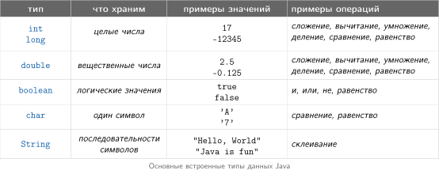
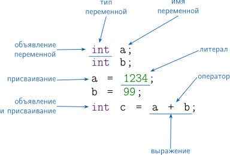
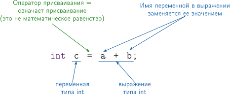
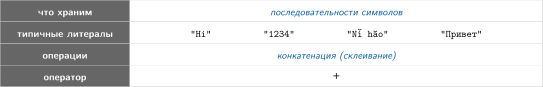
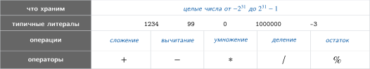
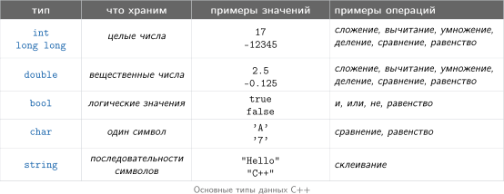
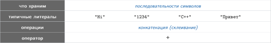
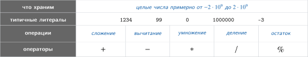

Переменные
Переменная — это ячейка памяти, в которой хранится значение во время работы программы.
Тип данных показывает, какие данные хранятся в переменной и какие операции для них подходят.

В этой главе мы рассмотрим только работу со строками и целыми числами. Вещественные, логические и символьные типы мы рассмотрим в других главах.
Базовые термины работы с переменными

- Объявление переменной связывает имя переменной с типом данных
- Переменная хранит значение некоторого типа данных
- Присваивание записывает значение в переменную.
- Литерал — это запись конкретного значения прямо в коде.
- Выражение — это комбинация имён переменных, литералов и операторов, которая вычисляется в значение.
Как работает оператор присваивания
Java сначала вычисляет выражение справа от знака =, а потом оператор присваивания записывает полученное значение в переменную слева.

Задачи для тренировки: базовые термины работы с переменными
1. Корректен ли такой фрагмент?
Ответ
Некорректно.
Слева от оператора присваивания должна стоять переменная. 123 — это литерал, ему нельзя присвоить значение.
2. Корректен ли такой фрагмент?
Ответ
Некорректно.
Справа значение типа double, а слева переменная типа int. Такое присваивание без явного преобразования типа нельзя.
3. Корректен ли такой фрагмент?
Ответ
Некорректно.
Переменная s имеет тип String, а справа стоит числовой литерал 123, а не строка.
4. Корректен ли такой фрагмент?
Ответ
Корректно.
Справа от = может стоять выражение. Сначала Java вычисляет 3 * b, потом записывает результат в a.
5. Корректен ли такой фрагмент?
Ответ
Корректно.
Переменной можно присваивать новое значение. Здесь сначала вычисляется 2 * a, потом результат записывается в ту же переменную a.
6. Корректен ли такой фрагмент?
Ответ
Некорректно.
В выражении справа используется переменная a, но до этого ей еще не присвоили начальное значение.
Имена переменных
Хорошее имя помогает быстро понять, что хранится в переменной.
- имя должно подсказывать смысл значения:
speed,time,totalSeconds - в Java имена переменных обычно записывают в lowerCamelCase:
firstName,carSpeed,totalSeconds - имя не должно начинаться с цифры
- в имени не используют пробелы и дефисы
- короткие имена
a,b,xлучше оставлять только для коротких формул
Пример понятных имен:
То же вычисление с короткими именами читать сложнее:
Короткие имена уместны в короткой математической записи:
Трассировка
Трассировка помогает пошагово проследить, как в программе меняются значения переменных.
Рассмотрим задачу:
Даны длина и ширина прямоугольника. Длину увеличили на 2, а ширину уменьшили на 1. На сколько изменилась площадь прямоугольника?
Для решения будем использовать переменные: в них сохраним исходные данные, промежуточные результаты и ответ.
Проследите выполнение программы на слайдах ниже и посмотрите, как на каждом шаге меняются значения переменных.
Задачи для тренировки: трассировка
1. Какими станут a и b после выполнения этого кода?
Ответ
В конце:
Сначала в temp сохраняется старое значение a, потом a и b меняются местами.
2. Чему будет равно d после выполнения этого кода?
Ответ
В конце:
По шагам:
3. Какими станут a и b после выполнения этого кода?
Ответ
В конце:
Это тоже обмен значений местами, но без дополнительной переменной.
4. Чему будет равно x в конце выполнения этого кода?
Ответ
В конце:
По шагам:
5. Какими станут a и b после выполнения этого кода?
Ответ
В конце:
По шагам:
Строковый тип данных: String
String используется для ввода-вывода, хранения и обработки текстов.

Примеры выражений со строками:
| Выражение | Значение | Комментарий |
|---|---|---|
| "My " + "Precious" | "My Precious" |
пробелы внутри строк важны |
| "1234" + "99" | "123499" |
строки не складываются как числа |
| "A" + "B" + "C" | "ABC" |
можно склеивать несколько строк в одном выражении |
| "Привет, " + "мир!" | "Привет, мир!" |
поддерживается Unicode |
Обратите внимание: при склеивании строк новую часть можно добавить и в конец строки, и в её начало.
Проследите, как по шагам меняются значения переменных first и second в этой программе:
String first = "мама"; // В переменную first записали строку "мама".
String second = "кот"; // В переменную second записали строку "кот".
second = second + "ик"; // К "кот" добавили справа "ик". Получилось "котик".
first = "супер" + first; // К "мама" добавили слева "супер". Получилось "супермама".
second = first + second; // Склеили "супермама" и "котик". Получилось "супермамакотик".
Ввод-вывод строк
Вывод строк
Для вывода строк используют System.out. С его помощью программа выводит текст на экран.
| Вызов | Что делает |
|---|---|
System.out.print(x) |
Печатает x без перевода строки |
System.out.println(x) |
Печатает x и переводит строку |
System.out.println() |
Просто переводит строку |
Основные способы вывода строк
Одни и те же строковые значения можно вывести по-разному: в одной строке или построчно.
Если два строковых значения нужно вывести в одной строке, используют System.out.print(...).
String first = "кот";
String second = "дом";
System.out.print(first);
System.out.print(" ");
System.out.print(second);
кот дом
Если те же строковые значения нужно вывести построчно, используют System.out.println(...).
кот дом
Если рядом со строкой стоит число, Java автоматически превращает число в текст и склеивает его со строкой.
Возраст: 12
Ввод строк
Для ввода строк в Java обычно используют Scanner.
| Вызов | Что считывает |
|---|---|
in.next() |
Следующее слово до пробельного символа |
in.nextLine() |
Всю строку до перевода строки |
Основные способы ввода строк
Если два строковых значения разделены пробелом, используют next().
кот дом
дом кот
next() читает по словам, поэтому и пробел, и перевод строки работают для него как разделители.
Если каждое строковое значение находится на отдельной строке, используют nextLine().
String first = in.nextLine();
String second = in.nextLine();
System.out.println(second + " " + first);
кот дом
дом кот
Задачи для тренировки: ввод-вывод строк
1. Что выведет программа?
String first = "кот";
String second = "ик";
System.out.print(first);
System.out.println(second);
System.out.println(first + second);
Ответ
Программа выведет:
Сначала print(first) печатает кот без перехода на новую строку, потом println(second) дописывает ик и переводит строку.
2. Что выведет программа?
Ответ
Программа выведет:
Число рядом со строкой автоматически превращается в текст.
3. Какой метод нужно поставить вместо ???, если на вход подаётся одна строка:
Ответ
Нужно поставить:
next() читает по одному слову до пробела, поэтому он подходит для ввода кот дом.
4. Какой метод нужно поставить вместо ???, если на вход подаются две строки:
Ответ
Нужно поставить:
Здесь каждое значение находится на отдельной строке, поэтому читаем строки целиком.
5. Что выведет программа?
String a = "ма";
String b = "ма";
System.out.println(a);
System.out.print(b);
System.out.println();
System.out.println(a + b);
Ответ
Программа выведет:
Первый println(a) печатает ма и переводит строку. Потом print(b) печатает второе ма, а пустой println() просто переводит строку.
6. Какое значение будет у second в конце выполнения этого кода?
Ответ
В конце:
По шагам:
7. Что выведет программа?
Ответ
Программа выведет:
По шагам:
8. Какое значение будет у text в конце выполнения этого кода?
Ответ
В конце:
По шагам:
9. Какое значение будет у answer в конце выполнения этого кода?
String first = "дом";
String second = "ик";
String word = first + second;
String answer = "супер" + word;
Ответ
В конце:
По шагам:
Яндекс Контест: «01. Переменные» (задачи A-E)
Ссылка на контест: 01. Переменные (только для зарегистрированных учеников курса learncs.ru)
Выведите строку Hello, world!.
Входных данных нет.
Выведите ровно одну строку: Hello, world!.
Hello, world!
Даны имя и фамилия. Выведите их в порядке: сначала фамилия, потом имя.
В первой строке записано имя, во второй строке — фамилия. Обе строки непустые, не содержат пробелов, длина каждой не превосходит 100 символов.
Выведите два слова через один пробел: сначала фамилию, затем имя.
Alexandr Pushkin
Pushkin Alexandr
Даны имя и возраст. Выведите ответ в точности в формате из примера.
В первой строке записано имя без пробелов. Во второй строке записан возраст — целое число от 0 до 150.
Выведите одну строку в формате: name is age years old.
Maxim 34
Maxim is 34 years old.
Joe 25
Joe is 25 years old.
На вход подаются две строки. Прочитайте обе строки целиком и выведите их в обратном порядке: сначала вторую, потом первую.
В первой строке записана строка s1, во второй — строка s2. Обе строки могут содержать пробелы. Для чтения строк целиком удобно использовать nextLine().
Выведите две строки: сначала s2, затем s1.
Мама мыла раму Папа читал книгу
Папа читал книгу Мама мыла раму
one two three four five
three four five one two
Выведите указанную фигуру из звездочек в точности по образцу.
* *** ***** ***** *** *
Целочисленные типы данных: int и long
int и long используют для хранения целых чисел и вычислений без дробной части.
int
Этот тип подходит для счёта, количества предметов, номеров и других задач, где не нужны дроби.

Если в выражении участвуют только значения типа int, результат тоже будет иметь тип int.
Примеры выражений с типом int:
| Выражение | Значение | Комментарий |
|---|---|---|
20 + 3 |
23 |
сложение |
20 - 3 |
17 |
вычитание |
20 * 3 |
60 |
умножение |
20 / 3 |
6 |
дробная часть отбрасывается |
20 % 3 |
2 |
остаток от деления |
21 % 5 |
1 |
остаток после деления на 5 |
38 % 10 |
8 |
последняя цифра числа |
24 % 2 |
0 |
проверка на чётность |
20 / 0 |
ошибка | на ноль делить нельзя |
2147483647 + 1 |
-2147483648 |
переполнение типа int |
Обратите внимание: при делении двух int ответ тоже остаётся целым числом.
Если значение выходит за границы типа int, происходит переполнение. Поэтому очень большие целые числа в int хранить нельзя.
long
long используют для хранения больших целых чисел.
Этот тип нужен, когда значения не помещаются в int. Например, если в задаче встречаются миллиарды, очень большие расстояния или результаты больших вычислений.
По размеру long больше, чем int.
Примерные диапазоны такие:
- int: от -2 000 000 000 до 2 000 000 000
- long: от -9 000 000 000 000 000 000 до 9 000 000 000 000 000 000
Литералы типа long обычно записывают с суффиксом L.
Примеры:
Если большое число записать без суффикса L, Java сначала воспримет его как int, и возникнет ошибка.
Если есть сомнение, хватит ли int, лучше сразу использовать long.
Как и у int, у типа long есть границы. Если значение выходит за них, происходит переполнение.
Ввод-вывод int и long
Для вывода int и long используют те же System.out.print(...) и System.out.println(...), что и для строк.
Для ввода целых чисел в Java обычно используют Scanner. Предполагается, что в программе уже есть:
| Вызов | Что считывает |
|---|---|
in.nextInt() |
Следующее целое число типа int |
in.nextLong() |
Следующее целое число типа long |
Основные способы ввода int и long
Обычные целые числа читают через nextInt(), а большие через nextLong().
Обратите внимание: результат nextLong() нужно сохранять в переменную типа long.
int days = in.nextInt();
long visitors = in.nextLong();
System.out.println(days);
System.out.println(visitors);
12 5000000000
12 5000000000
Приоритет арифметических операций
В выражениях с int и long сначала выполняются действия в скобках. Потом идут *, / и %. После этого выполняются + и -.
Если рядом стоят операции одного уровня, они выполняются слева направо.
| Выражение | То же самое | Значение | Комментарий |
|---|---|---|---|
3 * 5 - 2 |
(3 * 5) - 2 |
13 |
* выполняется раньше - |
20 + 5 / 2 |
20 + (5 / 2) |
22 |
/ выполняется раньше + |
20 - 17 % 5 |
20 - (17 % 5) |
18 |
% выполняется раньше - |
18 / 5 * 2 |
(18 / 5) * 2 |
6 |
/ и * имеют одинаковый приоритет |
17 % 5 % 3 |
(17 % 5) % 3 |
2 |
% выполняется слева направо |
20 % (7 - 3) |
20 % 4 |
0 |
скобки меняют порядок вычислений |
Эти задачи тренируют шаблоны, которые часто встречаются уже в самых первых задачах: извлечение цифр числа, перевод времени и разбиение суммы на рубли и копейки.
Задачи для тренировки: целочисленные типы данных (int и long)
1. Чему равны выражения:
Ответ
Ответ:
Деление на 10 убирает последнюю цифру, а остаток от деления на 10 даёт последнюю цифру.
2. Дано положительное трёхзначное число n. Заполните пропуски, чтобы получить цифру сотен, десятков и единиц.
Ответ
3. Дано int totalMinutes = 135;. Чему будут равны hours и minutes?
Ответ
Ответ:
4. Дано int totalSeconds = 3672;. Заполните пропуски и найдите значения переменных.
Ответ
int hours = totalSeconds / 3600;
int minutes = totalSeconds % 3600 / 60;
int seconds = totalSeconds % 60;
Получится:
5. Дано int totalHours = 53;. Сколько это суток и часов?
Ответ
Ответ:
6. Что выведет программа?
long rub = 12;
long kop = 35;
long pieces = 4;
long total = (rub * 100 + kop) * pieces;
System.out.println(total / 100 + " " + total % 100);
Ответ
Программа выведет:
По шагам:
7. Что выведет программа?
Ответ
Программа выведет:
По шагам:
8. Какой тип нужно выбрать для числа 5000000000 и как правильно записать это значение в коде?
Ответ
Нужен тип long.
В int такое число не помещается.
Яндекс Контест: «01. Переменные» (задачи F-M)
Ссылка на контест: 01. Переменные (только для зарегистрированных учеников курса learncs.ru)
Даны два целых числа a и b. Найдите их сумму.
В единственной строке записаны два целых числа a и b.
Выведите одно целое число — сумму этих чисел.
2 3
5
Дано целое число a. Выведите число, которое идет сразу после него.
В единственной строке записано целое число a.
Выведите одно целое число — число, следующее за a.
4
5
-3
-2
Дано двузначное натуральное число. Найдите число десятков в нем.
В единственной строке записано двузначное натуральное число.
Выведите число десятков в этом числе.
42
4
98
9
Автомобиль едет t часов со скоростью v километров в час. Определите, сколько сантиметров он проедет.
В единственной строке записаны два целых числа t и v.
Выведите одно целое число — расстояние в сантиметрах.
1 10
1000000
2 5
1000000
Пирожок стоит a рублей и b копеек. Определите, сколько рублей и копеек нужно заплатить за n пирожков.
В единственной строке записаны три целых числа a, b и n. Гарантируется, что 1 ≤ a, b, n ≤ 10000.
Выведите два целых числа через пробел: стоимость покупки в рублях и копейках.
10 15 2
20 30
2 50 3
7 50
Товар стоит a рублей и b копеек. Купили n штук. Определите, сколько рублей и копеек нужно заплатить за всю покупку.
В первой строке записано число a, во второй — b, в третьей — n. Дополнительно гарантируется, что a и n неотрицательны, а 0 ≤ b < 100.
Выведите два числа: сначала количество рублей, потом количество копеек. Каждое число выведите на отдельной строке.
10 15 2
20 30
2 50 4
10 0
Недавно на математике Амир научился раскрывать скобки. Теперь он знает, что (a + b) * c = a * c + b * c. На этом уроке учитель задал большую домашнюю работу с очень похожими заданиями. В каждом задании было задано три натуральных числа. Из них нужно было составить выражение, как в формуле, раскрыть скобки и вычислить ответ. Например, если заданы числа 3, 4 и 5, в тетради нужно было записать так: (3+4)*5=3*5+4*5=15+20=35. Вычисления обязательно нужно было выполнять в том же порядке, как в примере, иначе двойка была неизбежна.
Амир уже давно учится программировать и понял, что легко может написать программу, которая выполнит все вычисления в нужном порядке и запишет ответ. Осталось только написать программу.
В единственной строке записаны три натуральных числа a, b и c.
Выведите полную запись вычислений в точности в формате из примера.
3 4 5
(3+4)*5=3*5+4*5=15+20=35
5 3 7
(5+3)*7=5*7+3*7=35+21=56
В этой задаче не надо придумывать никаких сложных формул, в ней даже нет входных данных, просто верните число 10^18.
Входных данных нет.
Выведите число 10^18.
1000000000000000000
Преобразование типов
Преобразование типов нужно, когда значение уже есть, но для следующего действия нужен другой тип. Например, строку с числом нужно превратить в int или long, а значение типа double иногда нужно явно превратить в int.
Автоматические преобразования
Часть преобразований Java делает сама.
Если к строке прибавить число, это число автоматически превратится в строку.
x = 99
Преобразование строки в число
Если число хранится в строке, а дальше его нужно использовать в вычислениях, используют специальные методы.
| Вызов | Что получается |
|---|---|
Integer.parseInt(text) |
строка превращается в int |
Long.parseLong(text) |
строка превращается в long |
Преобразование строки в целое число
int a = Integer.parseInt("126");
long b = Long.parseLong("5000000000");
System.out.println(a);
System.out.println(b);
126 5000000000
Строка должна быть записана как число. Например, строку "12a" так преобразовать уже нельзя.
Явное преобразование
Явное преобразование нужно, когда в результате преобразования можно потерять часть данных. Тогда тип пишут в скобках перед выражением.
2
При таком преобразовании из double в int дробная часть отбрасывается.
Преобразования в double разбираются отдельно в главе про вещественные числа.
| Выражение | Тип | Значение | Комментарий |
|---|---|---|---|
Integer.parseInt("12") + 6 |
int |
18 |
строка сначала превращается в число, и только потом выполняется сложение |
(int) 5.9 |
int |
5 |
дробная часть отбрасывается |
"12" + 6 |
String |
"126" |
число превращается в строку, и получается склеивание текста |
Примеры преобразования типов в выражениях
Задачи для тренировки: преобразование типов
1. Чему равны тип и значение выражения?
Ответ
Ответ:
Число автоматически превращается в строку.
2. Заполните пропуски:
Ответ
Нужно подставить:
Получится:
3. Что выведет программа?
Ответ
Программа выведет:
При преобразовании из double в int дробная часть отбрасывается.
Яндекс Контест: «01. Переменные» (задачи N-O)
Ссылка на контест: 01. Переменные (только для зарегистрированных учеников курса learncs.ru)
Даны три строки, каждая из которых состоит только из цифр. Склейте их в одну строку, преобразуйте результат в число, прибавьте 1 и выведите ответ.
В первой, второй и третьей строках записаны строки из цифр. Гарантируется, что после склейки получается целое число, не превосходящее 10^9.
Выведите одно целое число — результат описанных действий.
12 34 5
12346
0 0 0
1
Даны пять строк, каждая из которых состоит только из цифр. Склейте их в одну строку, преобразуйте результат в число типа long, прибавьте 1 и выведите ответ.
В пяти строках записаны строки из цифр. Гарантируется, что после склейки получается целое число, не превосходящее 10^18.
Выведите одно целое число — результат описанных действий.
12 34 56 78 9
123456790
0 0 0 0 0
1
Переменная — это ячейка памяти, в которой хранится значение во время работы программы.
Тип данных показывает, какие данные хранятся в переменной и какие операции для них подходят.

В этой главе мы рассмотрим только работу со строками и целыми числами. Вещественные, логические и символьные типы мы рассмотрим в других главах.
Базовые термины работы с переменными
- Объявление переменной связывает имя переменной с типом данных
- Переменная хранит значение некоторого типа данных
- Присваивание записывает значение в переменную
- Литерал — это запись конкретного значения прямо в коде
- Выражение — это комбинация имён переменных, литералов и операторов, которая вычисляется в значение
Как работает оператор присваивания
C++ сначала вычисляет выражение справа от знака =, а потом оператор присваивания записывает полученное значение в переменную слева.
Задачи для тренировки: базовые термины работы с переменными
1. Корректен ли такой фрагмент?
Ответ
Некорректно.
Слева от оператора присваивания должна стоять переменная. 123 — это литерал, ему нельзя присвоить значение.
2. Корректен ли такой фрагмент?
Ответ
Некорректно.
Справа значение типа string, а слева переменная типа int. Для такого преобразования нужно явно переводить строку в число, например через stoi(...).
3. Корректен ли такой фрагмент?
Ответ
Некорректно.
Переменная s имеет тип string, а справа стоит числовой литерал 123, а не строка.
4. Корректен ли такой фрагмент?
Ответ
Корректно.
Справа от = может стоять выражение. Сначала C++ вычисляет 3 * b, потом записывает результат в a.
5. Корректен ли такой фрагмент?
Ответ
Корректно.
Переменной можно присваивать новое значение. Здесь сначала вычисляется 2 * a, потом результат записывается в ту же переменную a.
6. Корректен ли такой фрагмент?
Ответ
Некорректно.
В выражении справа используется переменная a, но до этого ей еще не присвоили начальное значение.
Имена переменных
Хорошее имя помогает быстро понять, что хранится в переменной.
- имя должно подсказывать смысл значения:
speed,time,distance - имя не должно начинаться с цифры
- в имени не используют пробелы и дефисы
- короткие имена
a,b,xлучше оставлять только для коротких формул
Пример понятных имен:
То же вычисление с короткими именами читать сложнее:
Короткие имена уместны в короткой математической записи:
Трассировка
Трассировка помогает пошагово проследить, как в программе меняются значения переменных.
Рассмотрим задачу:
Даны длина и ширина прямоугольника. Длину увеличили на 2, а ширину уменьшили на 1. На сколько изменилась площадь прямоугольника?
Для решения будем использовать переменные: в них сохраним исходные данные, промежуточные результаты и ответ.
Например, такой фрагмент можно разбирать по шагам, записывая текущее значение каждой переменной после каждой строки:
int length = 5;
int width = 3;
int s1 = length * width;
length = length + 2;
width = width - 1;
int s2 = length * width;
int d = s2 - s1;
Задачи для тренировки: трассировка
1. Какими станут a и b после выполнения этого кода?
Ответ
В конце:
Сначала в temp сохраняется старое значение a, потом a и b меняются местами.
2. Чему будет равно d после выполнения этого кода?
Ответ
В конце:
По шагам:
3. Какими станут a и b после выполнения этого кода?
Ответ
В конце:
Это тоже обмен значений местами, но без дополнительной переменной.
4. Чему будет равно x в конце выполнения этого кода?
Ответ
В конце:
По шагам:
5. Какими станут a и b после выполнения этого кода?
Ответ
В конце:
По шагам:
Строковый тип данных: string
string используется для ввода-вывода, хранения и обработки текстов.

В C++ строки склеивают оператором +. Если в склеивании участвует число, его сначала превращают в строку через to_string(...).
В отличие от Java, в таком выражении хотя бы одна часть должна быть типа string. Поэтому в примерах ниже слева мы явно создаем string.
Примеры выражений со строками:
| Выражение | Значение | Комментарий |
|---|---|---|
string("My ") + "Precious" |
"My Precious" |
пробелы внутри строк важны |
string("1234") + "99" |
"123499" |
строки не складываются как числа |
string("A") + "B" + "C" |
"ABC" |
можно склеивать несколько строк в одном выражении |
string("Привет, ") + "мир!" |
"Привет, мир!" |
можно работать и с русскими строками |
Обратите внимание: при склеивании строк новую часть можно добавить и в конец строки, и в её начало.
Проследите, как по шагам меняются значения переменных first и second в этой программе:
string first = "мама"; // В переменную first записали строку "мама".
string second = "кот"; // В переменную second записали строку "кот".
second = second + "ик"; // К "кот" добавили справа "ик". Получилось "котик".
first = "супер" + first; // К "мама" добавили слева "супер". Получилось "супермама".
second = first + second; // Склеили "супермама" и "котик". Получилось "супермамакотик".
Ввод-вывод строк
Вывод строк
Для вывода строк используют cout. С его помощью программа выводит текст на экран.
| Вызов | Что делает |
|---|---|
cout << x |
Печатает x без перевода строки |
cout << x << endl |
Печатает x и переводит строку |
cout << endl |
Просто переводит строку |
Основные способы вывода строк
Одни и те же строковые значения можно вывести по-разному: в одной строке или построчно.
Если два строковых значения нужно вывести в одной строке, используют cout << ....
кот дом
Если те же строковые значения нужно вывести построчно, используют endl.
кот дом
Если рядом со строкой нужно вывести число, в C++ обычно используют цепочку <<.
Возраст: 12
Ввод строк
Для ввода строк в C++ обычно используют cin и getline.
| Вызов | Что считывает |
|---|---|
cin >> word |
Следующее слово до пробельного символа |
getline(cin, line) |
Всю строку до перевода строки |
Основные способы ввода строк
Если два строковых значения разделены пробелом, используют cin >>.
кот дом
дом кот
cin >> читает по словам, поэтому и пробел, и перевод строки работают для него как разделители.
Если каждое строковое значение находится на отдельной строке, используют getline(...).
string first;
string second;
getline(cin, first);
getline(cin, second);
cout << second << " " << first << endl;
кот дом
дом кот
Задачи для тренировки: ввод-вывод строк
1. Что выведет программа?
string first = "кот";
string second = "ик";
cout << first;
cout << second << endl;
cout << first + second << endl;
Ответ
Программа выведет:
Сначала cout << first печатает кот без перехода на новую строку, потом cout << second << endl дописывает ик и переводит строку.
2. Что выведет программа?
Ответ
Программа выведет:
В цепочке cout << число можно вывести рядом со строкой без явного to_string(...).
3. Что нужно поставить вместо ???, если на вход подаётся одна строка:
Ответ
Нужно поставить:
cin >> читает по одному слову до пробела, поэтому он подходит для ввода кот дом.
4. Что нужно поставить вместо ???, если на вход подаются две строки:
string first;
string second;
???(cin, first);
???(cin, second);
cout << second << " " << first << endl;
Ответ
Нужно поставить:
Здесь каждое значение находится на отдельной строке, поэтому читаем строки целиком.
5. Что выведет программа?
string a = "ма";
string b = "ма";
cout << a << endl;
cout << b;
cout << endl;
cout << a + b << endl;
Ответ
Программа выведет:
Первый cout << a << endl печатает ма и переводит строку. Потом cout << b печатает второе ма, а отдельный cout << endl просто переводит строку.
6. Какое значение будет у second в конце выполнения этого кода?
Ответ
В конце:
По шагам:
7. Что выведет программа?
Ответ
Программа выведет:
По шагам:
8. Какое значение будет у text в конце выполнения этого кода?
Ответ
В конце:
По шагам:
9. Какое значение будет у answer в конце выполнения этого кода?
string first = "дом";
string second = "ик";
string word = first + second;
string answer = "супер" + word;
Ответ
В конце:
По шагам:
Целочисленные типы данных: int и long long
int и long long используют для хранения целых чисел и вычислений без дробной части.
int
Этот тип подходит для счёта, количества предметов, номеров и других задач, где не нужны дроби.

Если в выражении участвуют только значения типа int, результат тоже будет иметь тип int.
Примеры выражений с типом int:
| Выражение | Значение | Комментарий |
|---|---|---|
20 + 3 |
23 |
сложение |
20 - 3 |
17 |
вычитание |
20 * 3 |
60 |
умножение |
20 / 3 |
6 |
дробная часть отбрасывается |
20 % 3 |
2 |
остаток от деления |
21 % 5 |
1 |
остаток после деления на 5 |
38 % 10 |
8 |
последняя цифра числа |
24 % 2 |
0 |
проверка на чётность |
20 / 0 |
ошибка | на ноль делить нельзя |
2147483647 + 1 |
не определено | выход за границы signed int |
Обратите внимание: при делении двух int ответ тоже остаётся целым числом.
Если значение выходит за границы типа int, на результат уже нельзя рассчитывать. Поэтому очень большие целые числа в int хранить нельзя.
long long
long long используют для хранения больших целых чисел.
Этот тип нужен, когда значения не помещаются в int. Например, если в задаче встречаются миллиарды, очень большие расстояния или результаты больших вычислений.
По размеру long long больше, чем int.
Примерные диапазоны такие:
int: от -2 000 000 000 до 2 000 000 000long long: от -9 000 000 000 000 000 000 до 9 000 000 000 000 000 000
Литералы типа long long в учебных примерах удобно записывать с суффиксом LL, чтобы тип был виден прямо в коде.
Примеры:
Если есть сомнение, хватит ли int, лучше сразу использовать long long.
Как и у int, у типа long long есть границы. Если значение выходит за них, на результат вычислений уже нельзя рассчитывать.
Ввод-вывод int и long long
Для вывода int и long long используют те же cout << ..., что и для строк.
Для ввода целых чисел в C++ обычно используют cin.
| Фрагмент | Что считывает |
|---|---|
cin >> x при int x; |
Следующее целое число типа int |
cin >> y при long long y; |
Следующее целое число типа long long |
Основные способы ввода int и long long
Обычные целые числа читают в int, а большие — в long long.
int days;
long long visitors;
cin >> days;
cin >> visitors;
cout << days << endl;
cout << visitors << endl;
12 5000000000
12 5000000000
Приоритет арифметических операций
В выражениях с int и long long сначала выполняются действия в скобках. Потом идут *, / и %. После этого выполняются + и -.
Если рядом стоят операции одного уровня, они выполняются слева направо.
| Выражение | То же самое | Значение | Комментарий |
|---|---|---|---|
3 * 5 - 2 |
(3 * 5) - 2 |
13 |
* выполняется раньше - |
20 + 5 / 2 |
20 + (5 / 2) |
22 |
/ выполняется раньше + |
20 - 17 % 5 |
20 - (17 % 5) |
18 |
% выполняется раньше - |
18 / 5 * 2 |
(18 / 5) * 2 |
6 |
/ и * имеют одинаковый приоритет |
17 % 5 % 3 |
(17 % 5) % 3 |
2 |
% выполняется слева направо |
20 % (7 - 3) |
20 % 4 |
0 |
скобки меняют порядок вычислений |
Эти задачи тренируют шаблоны, которые часто встречаются уже в самых первых задачах: извлечение цифр числа, перевод времени и разбиение суммы на рубли и копейки.
Задачи для тренировки: целочисленные типы данных (int и long long)
1. Чему равны выражения:
Ответ
Ответ:
Деление на 10 убирает последнюю цифру, а остаток от деления на 10 даёт последнюю цифру.
2. Дано положительное трёхзначное число n. Заполните пропуски, чтобы получить цифру сотен, десятков и единиц.
Ответ
3. Дано int totalMinutes = 135;. Чему будут равны hours и minutes?
Ответ
Ответ:
4. Дано int totalSeconds = 3672;. Заполните пропуски и найдите значения переменных.
Ответ
int hours = totalSeconds / 3600;
int minutes = totalSeconds % 3600 / 60;
int seconds = totalSeconds % 60;
Получится:
5. Дано int totalHours = 53;. Сколько это суток и часов?
Ответ
Ответ:
6. Что выведет программа?
long long rub = 12;
long long kop = 35;
long long pieces = 4;
long long total = (rub * 100 + kop) * pieces;
cout << total / 100 << " " << total % 100 << endl;
Ответ
Программа выведет:
По шагам:
7. Что выведет программа?
Ответ
Программа выведет:
По шагам:
8. Какой тип нужно выбрать для числа 5000000000 и как правильно записать это значение в коде?
Ответ
Нужен тип long long.
В int такое число не помещается.
Преобразование типов
Преобразование типов нужно, когда значение уже есть, но для следующего действия нужен другой тип. Например, строку с числом нужно превратить в int или long long, а значение типа double иногда нужно явно превратить в int.
Автоматические преобразования
Часть преобразований C++ делает сама.
Если в выражении участвуют int и long long, значение типа int автоматически расширяется до long long.
5000000012
При выводе через cout << число тоже не нужно вручную превращать в строку.
Преобразование строки в число
Если число хранится в строке, а дальше его нужно использовать в вычислениях, используют специальные функции.
| Вызов | Что получается |
|---|---|
stoi(text) |
строка превращается в int |
stoll(text) |
строка превращается в long long |
Преобразование строки в целое число
126 5000000000
Строка должна быть записана как число. Например, строку "12a" так преобразовать уже нельзя.
Явное преобразование
Явное преобразование нужно, когда в результате преобразования можно потерять часть данных. Тогда тип пишут явно перед выражением.
2
При таком преобразовании из double в int дробная часть отбрасывается.
Преобразования в double разбираются отдельно в главе про вещественные числа.
| Выражение | Тип | Значение | Комментарий |
|---|---|---|---|
stoi("12") + 6 |
int |
18 |
строка сначала превращается в число, и только потом выполняется сложение |
static_cast<int>(5.9) |
int |
5 |
дробная часть отбрасывается |
to_string(12) + "6" |
string |
"126" |
число превращается в строку, и получается склеивание текста |
Примеры преобразования типов в выражениях
Задачи для тренировки: преобразование типов
1. Чему равны тип и значение выражения?
Ответ
Ответ:
Число сначала превращается в строку функцией to_string(...).
2. Заполните пропуски:
Ответ
Нужно подставить:
Получится:
3. Что выведет программа?
Ответ
Программа выведет:
При преобразовании из double в int дробная часть отбрасывается.
По материалам:
М. Густокашин. Введение в программирование на языке C++. Сириус Курсы. Перейти к курсу.